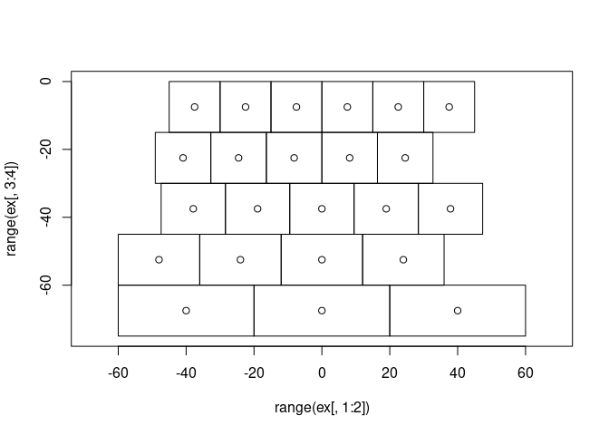
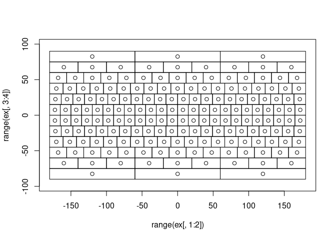
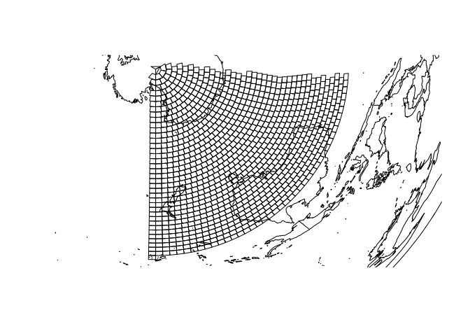

The goal of L3bin is to provide the Integerized Sinusoidal Binning Scheme used by NASA’s Ocean Biology processing Group for Level 3 data.
Installation
You can install the development version of L3bin from GitHub with:
# install.packages("devtools")
devtools::install_github("hypertidy/L3bin")Example
This is a basic example which shows how to create a very low resolution L3 bin scheme, plot it and perform some queries.
library(L3bin)
## basic example code
nr <- 6
bins <- L3bin(nr)
ex <- extent_from_bin(1:bins$totbins, nr)
plot(range(ex[,1:2]), range(ex[,3:4]), type = "n", asp = 1)
rect(ex[,1], ex[,3], ex[,2], ex[, 4])
points(lonlat_from_bin(1:bins$totbins, NUMROWS = nr))
Now we increas the resolution and use the available froms to crop, obtain bin boundaries, and provide the centre point of the bin from its index.
nr <- 12
bins <- L3bin(nr)
lbins <- crop_bins(bins, extent = c(-20, 30, -60, -10))
ex <- extent_from_bin(lbins, nr)
plot(range(ex[,1:2]), range(ex[,3:4]), type = "n", asp = 1)
rect(ex[,1], ex[,3], ex[,2], ex[, 4])
points(lonlat_from_bin(lbins, NUMROWS = nr))
ex <- extent_from_bin(1:bins$totbins, nr)
plot(range(ex[,1:2]), range(ex[,3:4]), type = "n", asp = 1)
rect(ex[,1], ex[,3], ex[,2], ex[, 4])
points(lonlat_from_bin(1:bins$totbins, NUMROWS = nr))
It should be clear that while we can easily up the detail and obtain very large numbers of bins, it’s much smarter to keep things lazy and not materialize the actual bin numbers, boundary extents, or centre points. It very quickly can become unwieldly. For example, the base resolution of SeaWiFS L3 bins in 1998 was a NUMROWS of 2160, which means a lot of unnecessary storage. Much better to avoid that when the functions provide the capability we need without generating the grid explicitly.
(nbins_2160 <- L3bin(2160)$totbins)
#> [1] 5940422
## this would be nearly 25Mb just to list the bin index
nbins_2160 * 4 / 1e6
#> [1] 23.76169
## 190Mb to store the bin boundaries
nbins_2160 * 4 * 8/ 1e6
#> [1] 190.0935
## another 50Mb just for the centre coordinates
nbins_2160 * 8 / 1e6
#> [1] 47.52338A grid with 2160 rows represents approximately 9.28km^2 in bin area, and we may have much higher resolution that that for modern tasks. L3bin provides a simple core for this binning scheme.
Warning
The bin number is currently stored as an integer, so beyond ~41000 ) rows this will overflow and we’d need to use a larger type to store it. Let us know if you need this, or encounter problems. 41000 rows is near a 500m bin size, which is the resolution of GEBCO 2021 for example.
Get lonlat from bin and vice versa.
plot(range(ex[,1:2]), range(ex[,3:4]))
rect(ex[,1], ex[,3], ex[,2], ex[, 4])
text(lonlat_from_bin(1:bins$totbins, nr), lab = 1:bins$totbins)
abline(v = 147, h = -42, col = "firebrick")
bin_from_lonlat(147, -42, nr)
#> [1] 45Using the crop from above, reproject after densifying (safely) with sf
nr <- 96
bins <- L3bin(nr)
ex <- extent_from_bin(1:bins$totbins, nr)
lbins <- crop_bins(bins, extent = c(100, 180, -90, -20))
ex <- extent_from_bin(lbins, nr)
## generally sf a bad idea because 4 numbers xmin,xmax,ymin,ymax become 10
## and we could use mesh3d or similar from silicate (SC0), but here's an example
## just to show a projected set of the bins
to_sf <- function(ex, crs = "OGC:CRS84") {
idx <- c(1, 2, 2, 1, 1,
3, 3, 4, 4, 3)
proto <- sf::st_polygon(list(cbind(0, c(1:4, 1))))
sf::st_sfc(lapply(split(t(ex), rep(1:nrow(ex), each = 4L)),
function(.x) {
proto[[1L]][] <- .x[idx]
proto
}), crs = crs)
}
sf::sf_use_s2(FALSE)
#> Spherical geometry (s2) switched off
segit <- function(x, dx = 111111) {
crs <- sf::st_crs(x)
sf::st_set_crs(sf::st_segmentize(sf::st_set_crs(x, NA), dx), crs)
}
prj <- "+proj=laea +lat_0=-80"
## dx is 1 degree in straightforward sense
plot(sf::st_transform(segit(to_sf(ex), 11111), prj))
mm <- reproj::reproj(do.call(cbind, maps::map(plot = FALSE)[1:2]), prj, source = "+proj=longlat")[,1:2]
lines(mm)
Code of Conduct
Please note that the L3bin project is released with a Contributor Code of Conduct. By contributing to this project, you agree to abide by its terms.